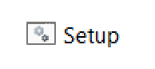
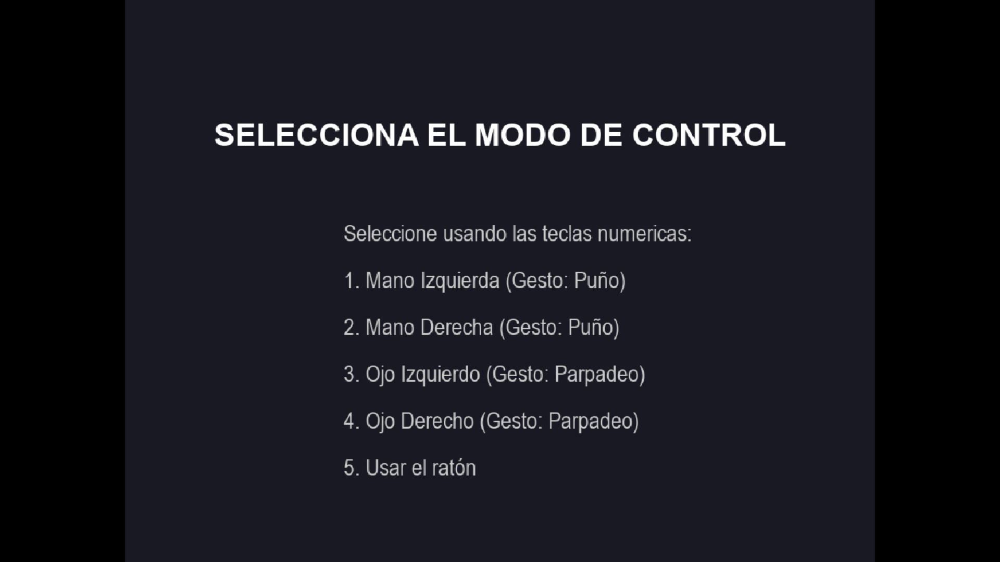
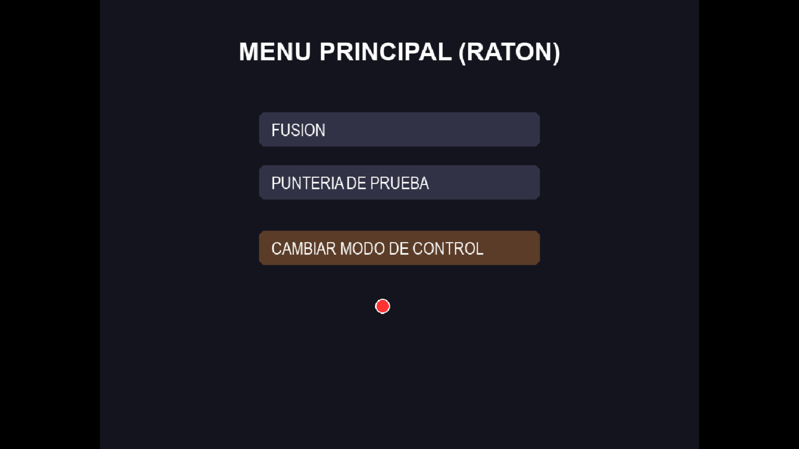

Antes de poder usar el programa, primero debe instalar Python y las librerias necesarias para el correcto funcionamiento del mismo.
Para esto de usar el archivo "Setup" dentro de la carpeta del programa:

En caso de que el "Setup" no arranque o funcione, puede colocar manualmente los siguientes comandos en la consola/terminal del sistema operativo:
python -m pip install --upgrade pip
pip install opencv-python==4.13.0.92 mediapipe==0.10.35 pygame-ce
Una vez instalado Python y sus librerias, puede arraccar el programa usando el archivo "main" que se encuentra en la carpeta del proyecto.
Una vez abierto el programa aparecera la pantalla de seleccion de modo de control, en esta se puede elegir como mover el cursor durante la ejecucion del programa. Para elegir un modo de control, tiene que presionar la tecla correspondiente al modo a utilizar.
Los modos de control que el programa incluye son: 1-mano izquierda, 2-mano derecha, 3-ojo izquierdo, 4-ojo derecho y 5-mouse (solo para pruebas). Con las manos, se hace click cerrando el puño, y con los ojos, se hace click pestaneando.

Luego de elegir el modo se abrira la pantalla de calibracion, en esta se deben seguir unos pasos para que programa detecte el moviento.
En el caso de las manos, hay que llevar la mano seleccionada a la esquina suprior izquierda de la ventana y presionar Enter, luego hay que llevarla a la esquina inferior derecha de la ventana y presionar Enter:
En el caso de los ojos, hay que mirar con el ojo seleccionado a la esquina suprior izquierda de la pantalla y presionar Enter, luego hay que mirar la esquina inferior derecha de la pantalla y presionar Enter:
Una vez calibrado el moviento, podra mover el cursor por el menu principal. En este encontrara tres botones, los dos primeros te permiten entrar a los juegos que el programa posee, el ultimo te permite volver a la pantalla de inicio para volver a seleccionar un modo de control y recalibrar el movimiento.

Los juegos de guardan en la carpeta "games", dando la posibilidad de agregar mas de estos de forma sencilla. Los juegos que incluye este programa son: un juego de apuntar a blancos que aparecen aleatoriamente en la pantalla y otro sobre fucionar bloques numerados.
A continuacion de muestran videos demostrativos de los mismos:
Para salir de los juegos se tiene que presionar la tecla Esc.
Si presiona Esc en el munu principal, el programa se cierra.